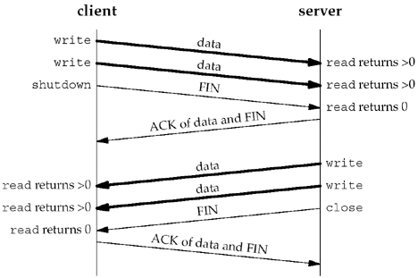

6.6 shutdown Function
The normal way to terminate a network connection is to call the close function. But, there are two limitations with close that can be avoided with shutdown:
close decrements the descriptor's reference count and closes the socket only if the count reaches 0. We talked about this in Section 4.8. With shutdown, we can initiate TCP's normal connection termination sequence (the four segments beginning with a FIN in Figure 2.5), regardless of the reference count. close terminates both directions of data transfer, reading and writing. Since a TCP connection is full-duplex, there are times when we want to tell the other end that we have finished sending, even though that end might have more data to send us. This is the scenario we encountered in the previous section with batch input to our str_cli function. Figure 6.12 shows the typical function calls in this scenario.

#include <sys/socket.h> | int shutdown(int sockfd, int howto); | Returns: 0 if OK, –1 on error |
The action of the function depends on the value of the howto argument.
SHUT_RD | The read half of the connection is closed— No more data can be received on the socket and any data currently in the socket receive buffer is discarded. The process can no longer issue any of the read functions on the socket. Any data received after this call for a TCP socket is acknowledged and then silently discarded.
By default, everything written to a routing socket (Chapter 18) loops back as possible input to all routing sockets on the host. Some programs call shutdown with a second argument of SHUT_RD to prevent the loopback copy. An alternative way to prevent this loopback copy is to clear the SO_USELOOPBACK socket option.
| SHUT_WR | The write half of the connection is closed— In the case of TCP, this is called a half-close (Section 18.5 of TCPv1). Any data currently in the socket send buffer will be sent, followed by TCP's normal connection termination sequence. As we mentioned earlier, this closing of the write half is done regardless of whether or not the socket descriptor's reference count is currently greater than 0. The process can no longer issue any of the write functions on the socket. | SHUT_RDWR | The read half and the write half of the connection are both closed— This is equivalent to calling shutdown twice: first with SHUT_RD and then with SHUT_WR.
|
Figure 7.12 will summarize the different possibilities available to the process by calling shutdown and close. The operation of close depends on the value of the SO_LINGER socket option.
The three SHUT_xxx names are defined by the POSIX specification. Typical values for the howto argument that you will encounter will be 0 (close the read half), 1 (close the write half), and 2 (close the read half and the write half).
 |